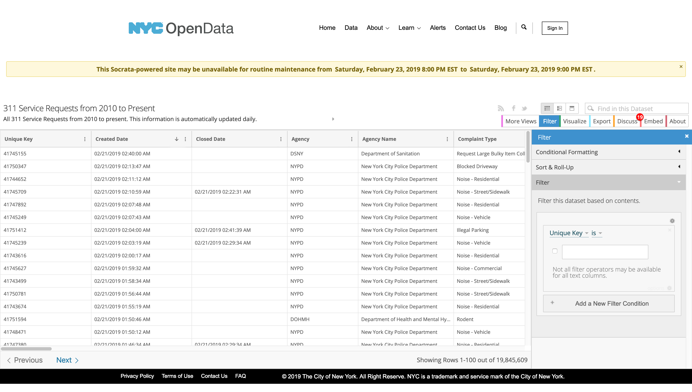
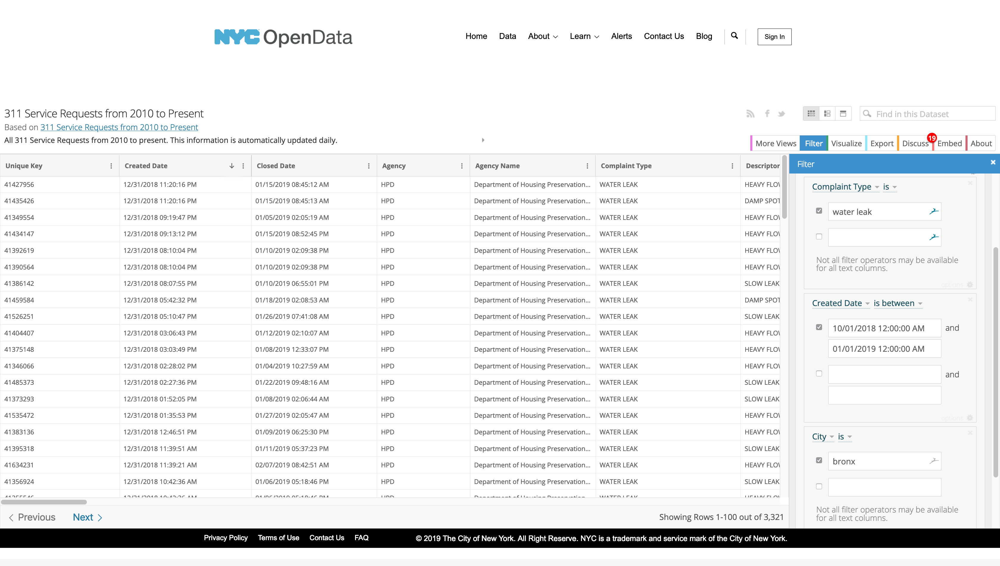
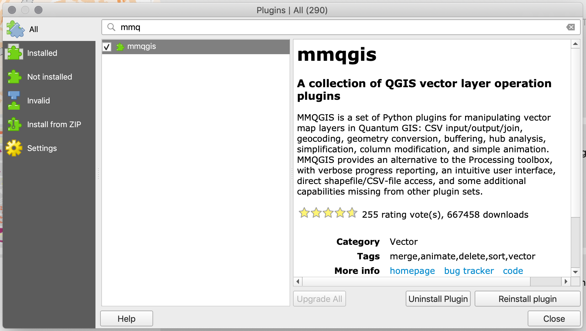
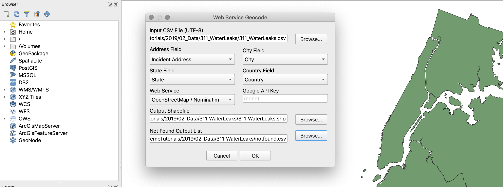
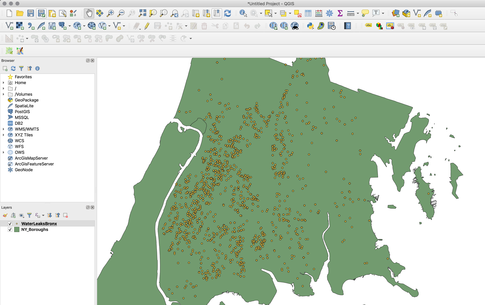
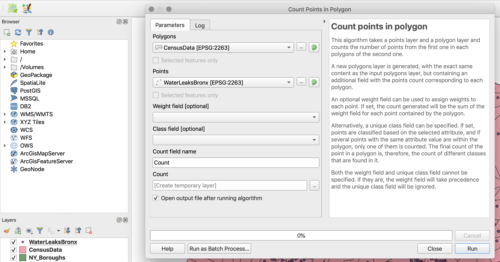
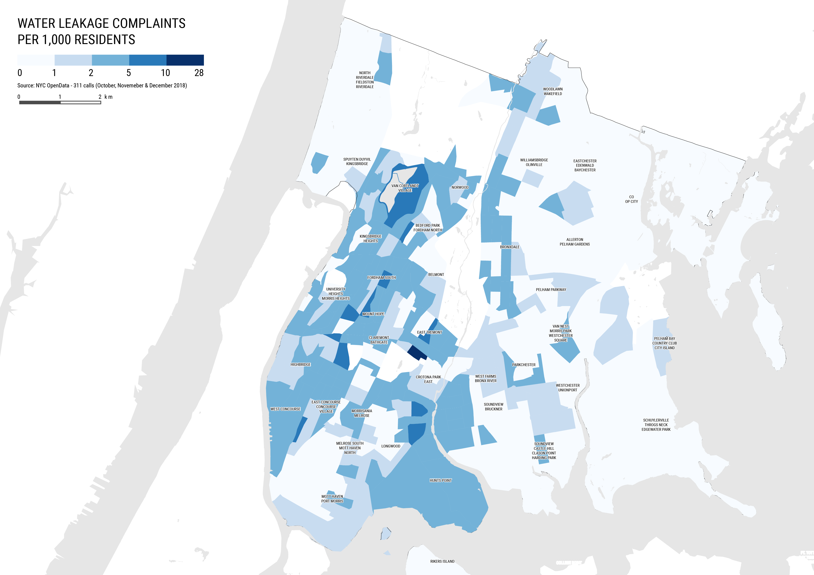

Datasets
In this tutorial will be using the following datasets:
311 Service Requests - Water Leaks. Download from NYC OpenData. See the downloading and preping section below for more information on how to filter and download this dataset.
American Community Survey - Table S0101 (AGE AND SEX). Download from the U.S. Census Bureau FactFinder site. See Tutorial 02 - Census Data & Joins for more information on how to download, prep, and join census data to polygons shapefiles.
Census Tracts - New York State 2017 census tracts. Download from U.S. Census Bureau - Tiger/Line Shapefiles. Select
2017andCensus Tracts, and clickSubmit. Then, selectNew Yorkas the state and clickDownload.Boroughs - New York City boroughs. Download from NYC Planning - Open Data. Choose "Borough Boundaries (Clipped to Shoreline)", under "Borough Boundaries & Community Districts".
Hydrography - New York City hydrography. Download from NYC Open Data. Once you get to the NYC OpenData page, click
Exportand choose theShapefileformat.United States Hydrographic Polygons. Download from the Columbia University Libraries Geodata portal. Download the
Original Shapefile.United States State Boundaries. Download from the U.S. Department of Transportation. Download the
Shapefile.
A packaged file with the census and block group data can be found here.
About 311 Data
The main dataset we will be using in this tutorial is based on 311 data. 311 is a service provided by the city of New York where people can call in (dialing 311) and submit complaints or ask questions about living in the city (the service also accepts complaints online). Some of the most popular complaints filed through 311 are about parking, noise, garbage, rodents, dead or damaged trees, air quality, construction permits, graffiti, homelessness, street conditions, taxis and water quality. There are other categories and each one of these has its own subcategories. Furthermore, each entry in the dataset comes with the following fields (amongst others):
Created date
Closed date
Agency
Complaint type
Descriptor
Location type
Incident zip code
Incident address
Street name
City
Landmark
Facility type
Status
Due date
Resolution description
Community board
X and Y coordinates
Latitude and longitude
The dataset is very interesting and a great resource for anyone studying New York. Nevertheless, a word of caution is necessary: many people use this dataset to describe and analyze conditions in New York; however, the 311 data does not describe the city, it describes the complaints people file, it is not about the city, it is about the complaints, and even though the complaints might tell us something about the city, the distinction is crucial. Every dataset has its own biases and the 311 dataset has very strong ones: it collects data ONLY about the people who complain and ONLY about what they choose to complain about; it doesn't say anything about the people who do not complain or the things people don't complain about. There is no 1 to 1 relationship between the 311 complaints and the conditions in the ground. That being said, though, it is still a great resource. You can find out more about the 311 service here.
Filtering, Downloading, and Preping 311 Data
The first step in this tutorial is to select, filter and download the 311 data. The NYC OpenData portal is a great resource for data related to New York City and it provides an easy way of accessing 311 data. In it's search bar type
311and it should take you to a list of datasets related to 311 data. The one we are looking for is called311 Service Requests from 2010 to Present. Once you click there, selectView Data.Once you've accessed the dataset you will see something like this:

Here, we need to filter the database to download only the complaints related to water leaks in the Bronx for the last three months of 2018. To filter the data do the following:
On the right-hand panel, where it says "Filter", create a small query using the drop-down menus. Where it says
Unique Key, change it toComplaint Type. Keep theisand then type inWater Leakin the space below.Next, click on
Add a New Filter Conditionand create another query that readsCreated Dateis between10/01/2018 12:00:00 AMand01/01/2019 12:00:00 AM.Finally, add another filter condition that reads
CityisBronx.You should see something like this:

Finally, click on the
Exportbutton at the top right-hand corner of the site and choose theCSV(comma separated values) format. Your file should start downloading then.Now open your .csv file in Excel. You should have around 3,320 records. If you explore this file you will notice that it contains both X and Y data (X Coordinate, Y Coordinate), as well as Latitude and Longitude. This means that if we wanted we could just import this table, as is, into QGIS and get points from just those fields, without going through the geocoding process. However, since the purpose of this tutorial is to show you how to geocode based on address data, we will ignore those fields and use instead the address data also present in this file. For more information on how to add data with geographic coordinates to QGIS see this tutorial.
In order to geocode we need to have the following fields: address, city, state, and country. Sometimes having the zipcode also helps. Looking at this data you'll notice we already have the address (
Incident Address) and the city (City). We are only missing state and country, which is easy to create since we know that all the locations on this file are in the Bronx. Go ahead and create two new columns calledStateandCountryand fill them withNew York(for the state) andUnited States(for the country).Finally, save your file as
Windows Comma Separated (.csv).Before moving forward a note of caution: the actual geocoding operation in QGIS takes some time. In our recent tests, it took us almost one hour to geocode a file this size. If you just want to learn how to geocode we strongly encourage you to select only 100 or 200 rows and save them as a separate file to use for geocoding. In the data package for this tutorial we are inlcuding the point shapefile which we produced by geocoding the original large file.
Geocoding
The actual geocoding process is very straight forward. Just take into account that since the geocoding plugin uses an external service (GoogleMaps or OpenStreetMap API) the more points you have, the more time it will take; similarly there are limits as to how many points you can submit for geocoding. If you need to geocode more than 2,000 points it is probably worth it doing it through a Python script that directly queries one of those APIs.
First, you will need to install the
MMQGISplugin, which includes a geocoding service.To install this plugin go to
PluginsManage and Install Plugins...and search forMMQGIS. Once you find it, clickInstall plugin.

Once the plugin is installed, open a new map and you should see a new top-level menu called
MMQGIS.Next add the
Boroughsshapefile. This is not necessary but it will help us verify the results of the geocoding.Finally, open the geocoding window by clicking on
MMQGISand selectingGeocodeandGeocode CSV with Google/OpenStreetMap.Select the file we prepared. Remember, if you are just doing this to learn, choose a file with no more than 200 addresses; anything larger than that might take a long time. Set the address field to
Incident Address, the city filed asCity, the state field asStateand the country field asCountry.Set the web service to
OpenStreetMap / Nominatim. And select the output file location and the location for the csv file with the addresses that were not located.

Once you are ready click
OK. It will take a while because the plugin takes into account the limits of the API and delays the request accordingly. For 200 or so requests it should take between 5 and 10 minutes.Once the geocoding process finishes you should have a new layer in your map with your geocoded points. This layer will still have all the data present in the base file. In addition, you should also have on your computer a file with the records that were the service was unable to geocode.

Additional Geocoding Options
Often you might need to geocode more than two or three hundred records. In these cases you should probably use your own Google Maps Geocoding API key. However, remember that even if you use your own key, Google still has a limit of 50 requests per minute and a total of 2,500 requests per day.
To obtain a key you should use a Google account to access the Google Developer Console. Once you sign in, you should create a
New Projectand for that project go toEnable APIs and Services.Once there search for "geocoding" and once you find it, enable the
Geocoding APIfor this project. Note that Google has changed its fee structure and now charges for geocoding. At the moment of writing this tutorial Google offers $200 montly credit for free, but once you pass that limit you will be charged for geocoding. More information on their pricing can be found here.Once you've enabled the API, click on the main menu of the Google APIs and navigate to
Credentialson your new project. There, click on theCreate Credentialsbutton and create your API key. This is the key that you will be able to use in the MMQGIS geocoder with theGoogle Maps Web Service.
Joining Point Data
Once you have your point data in QGIS, it is a pretty straight forward process to join it to a polygon shapefile. For this tutorial, we will be joining the water leaks data to census tracts polygons with population data. This will allow us to create a map of number of water leaks complaints per person in the Bronx.
First, in addition to your points and the boroughs, add the census data shapefile from the last tutorial.
Next, select
Vector/Analysis Tools/Count Points in Polygon.... Here choose the census data as thePolygonsand your points shapefile as thePoints.Leave the
WeightandClassfields blank and change theCount field nametoCount.

Click
Runand when it's done, clickClose. You should have a new layer, and if you open its attribute table you should see theCountfield at the end. Note that this is just a temporary layer. If you close QGIS this layer will dissapear. If you want to preserve it, you should export it as a new shapefile.Now that you have a count of the points in each polygon, you can go ahead an symbolize the layer based on the count, divided by the number of people living in each census tract. For this map it might be better to use complaints per 1,000 residents as the chosen metric.
Finally, add some of the other layers we have been using and compose your final map.
